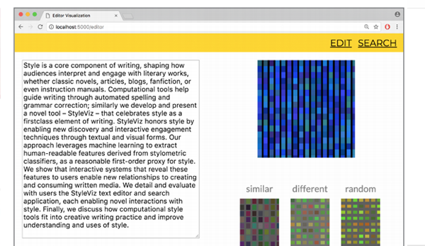
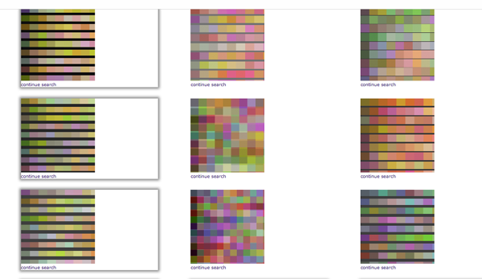
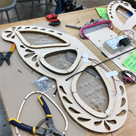

I designed everything on here, including the site! Click on the images to learn more about each project.
Design Engineering Instructor for United Technologies for Kids

Purpose
In Peru, as part of the second cohort sent by the United Technologies for Kids (a Peruvian NGO), I went to Chincha, a city in the Ica province, to start a makerspace with a teaching partner (Ryan Cosner). There, at the Colegio of Santa Maria I taught a variety of design engineering concepts including Arduinos, 3D printing, soldering, and more. Every day for three weeks, I taught kids from 7th grade to 12th grade for two hours in primarily Spanish.
Process
Throughout the Spring 2017, I worked with a team to create an Arduino and 3D curriculum. I was tasked with leading the Arduino side, so I created a teaching plan that began with the basics of electronics and then progressed into Arduino sensing and finally Arduino actuation. I incorporated Fritzing diagrams and extended activities with LED displays and motors to help familiarize students with circuits. You can see the examples of the slides here. Their first drafts were based off of labs I had done in the fall 2016 offering of Tangible User Interfaces, a graduate class taught by professor Kimiko Ryokai and graduate student Noura Howell. I owe them a huge amount of thanks for being part of the butterfly effect that changed my life.
When I arrived in Peru, my days revolved around preparing for our
taller, or workshop. My host family would drop off my partner Ryan and I at the colegio with their kids, and we would spend our mornings and early afternoons translating and editing our workshop lesson plans. We taught kids how to read engineering diagrams to create light sabers, hack their own water ionization conductivity probes, and diffuse 3 red, green, and blue LEDs under 3D-printed luminaires.
Implementation
1.0 Intro to the fundamentals of programming and logic through Processing-esque code. Slides here.
1.1 Introduction to Arduino style programming and circuits
1.2: Introduction to Arduino as input (potentiometers, the serial monitor, buttons). Slides here.
1.3: Circuits catch up day, electronics basics
1.4: Circuits for force-sensitive resistors, photoresistors, piezo speakers [Created a theremin]
2.0: Intro to CAD, generating excitement around 3D printing
2.1: Teaching advanced principles of CAD (patterns, lofting)
2.2: Teach Simplify 3D (the printer we brought over) and how to run it, Engineering Diagrams
2.3: Finish engineering diagrams, demo drones (we brought over a Phantom Dji 3, which allowed us to take the beautiful fireworks shot below)
3.0 Return to motor circuits
3.1 Water conductivity lab, final project brainstorming
3.2 Final project assistance
3.3 Future implications of making
*The way the curriculum was actually executed didn't exactly follow this order tooth-and-nail, but this is a rough sketch of the content we packed into our taller.


On June 7th (which happened to be my 20th birthday, we were all whisked to Lima to present at an educational fair. Our students took their projects and labwork to demonstrate their progress and meet the other freshly-minted makers across Peru (from Arequipa, Puno, Chincha, and Lima). My teaching partner and I actually spoke a few times at press conferences and at this conference as a closing speaker.
We also go to work on an assistive technology project.
Reflection

Teaching in Peru was a terrifying endeavor, but each and every day I am glad that when I was 19 I was daring enough hop continents and try it, because there honestly isn't a day that goes by where I don't think back to my time in South America. Sometimes I think about the taxi driver that I laughed and conversed with via Google Translate, who told me about how he used Twilight to learn English. Sometimes I think about the six year-old girl named Majo who played Duolingo with me. She said apple as I said manzana. Or the girls who invited me to kick ball with them after I ate lunch and chatted with me about animes.
But mostly I think back to my students, who taught me how to appreciate brilliance and diversity. Some would stay after class and listen to us teach modular arithmetic and vector math. Others worked on CAD at home, designing chess pieces and light sabers as they revelled in flexing their new creative capabilities. Everyone I met welcomed me with open arms, hearts, and minds.
Our students taught us about Peruvian culture as well. Two of my students moonlighted as tour guides through Chincha Baja and Chincha Alta, taking us through electronics stores, ruins, and chifa, the hybrid Peruvian-Chinese fare found all over Peru. My host families took me into the heart of industrial agriculture, showing me the part of Peru that is a cornucopia from which the world is fed.

Visiting Research Assistant at USC Institute of Creative Technologies

Purpose
For the latter half of the summer of 2017 (after I worked in Peru), I conducted research for USC, primarily doing programming tasks on an open-source Army Research Lab project called GIFT. The idea behind GIFT was to create an intelligent tutoring system to streamline army training. My contributions included developing atop the system's back-end controlled user interface and creating an interface to let users graph their gateways.
Process
The beginning of my summer was spent learning how to inherit a huge code base and contribute on top of it. After I familiarized myself with the system, I began to learn how to add functionalities, make cosmetic changes, and propagate info back to the system to be logged.


I also came around to bettering my Javascript through this internship, because I developed a web tool to draw and visualize gateways as graphs. To build it, I worked with JSON, Sigma (a graphing library), and data structures such as heaps.

After adding nodes as they pleased, the users would generate a string of JSON that would be parsed by some functions I wrote. With the help of Sigma, a graph would pop up in the center layout.
Reflection
Thanks to this program, I became very adept with living in unfamiliar code. I also became more adept at back-end, learning how it can control front-end as I worked up and down the stack. Conceptually, I learned a bit about messaging concepts as well.
Best of all, I got to understand an institute that was as devoted to the arts as they were to the sciences. I would watch movies with my cohort that were rendered from technologies created at the Institute (i.e. Logan, Leon: the Professional--I don't know why they chose such graphic movies) and hear from luminaries in CG like Paul Debevec. I was amazed by my fellow researchers, who would work on evolutionary neural nets or study negotiation using virtual humans.

(As an aside, I was also ecstatic to explore one of the cultural capitals of the world, Los Angeles!)
Tech Intern at First Data

Purpose
My first internship during college was at the Big Data branch of a company known as First Data. There, I used Python and SQL to automate data pulling and data visualization. It was an experience that really expanded my mental horizons, because I had never seen a volume of data that big before. I learned how to look at numbers like a detective, and for awhile I even would attempt it on the weekends out of sheer curiosity.
Process
My initial task was to aggregate data from a public source. To some degree, the team assumed that this would last me all summer. However, I learned how to interface with the API to automate that task, freeing myself to find harder and more fascinating work, of which there was plenty in Big Data. I proceeded to figure out what questions I could ask of the data I had collected and the data that I had access to. First Data's products are relevant to business growth and intelligence, so I learned what conclusions I could and could not draw from the two streams of public and corporate data I was analyzing.
After gleaning what I could from the sandbox of data before me, I also decided to flex my creative side to create an interface so that other people could input their queries and questions and be returned insights as well. Using Tableau, I created chloropleth maps, painting portraits with numbers as I aggregated data into maps as fine-grained as the zip code level. The prototype was documented, presented, and well-received by the team.
Reflection
During this experience, I got to work across the company vertical with product designers, data scientists, and product managers. Since I carved out a niche with one subset of public numbers, I also had the ability at times to sit in with some executives and guide them in understanding what affordances those numbers could give them.
This was my first time being mentored in a company dynamic, and I was very fortunate to have been given the freedom and chance to hone such a variety of industry skills in such a short period of time.
The Mouth/Chin-Operated Mouse
Purpose
When I worked in abroad during Peru, my teaching partner and I were introduced to a quadriplegic girl and asked if we could create something akin to LipSync, which is a sip-and-puff assistive tech mouse for people who can't use their limbs.
Though we were strapped for resources and for time, we worked on the prototype day in and day out when we weren't preparing for our workshops. What we produced within a week was a Arduino-powered mouse capable of moving and clicking as per mouth movement.
Process
Though we had scaffolding from a previous opensource iteration (credit), adapting the design for our user was incredibly challenging. All we had were the electronics, drone equipment, and two 3D printers that we had brought over. We began by hacking apart a drone remote controller, because we needed its joystick. After that, my partner and I partitioned the tasks so that I would handle the software and circuits and he would handle the physical making. He came up with a clever way to instigate pressure on the force sensitive resistor: through a mini pressure chamber created by the close of the mouth over an 3D printed orifice.
In parallel, I worked on the Java that would allow the Arduino input to take over the computer's mouse. This was taxing, because I had not seen Java or Intellij in a while, was unfamiliar coding on a PC, and was without consistent access to Internet/Stack Overflow to remedy this.
As I acclimated to my new developer environment, I wrangled with the bugs in the opensource code and experimented with types of interaction. After finally debugging all the bugs in the open source code by rewriting large chunks of it for the particular PC I worked on, I explored speech commands while my partner worked on pressure-chamber-enabled clicks. My method was to parse the cluck of a tongue into a left click, making for a more hygenic and easy interaction. However, this hope was dashed when we realized that there would be simply too much irrelevant positive feedback.
The pressure chamber had a slit through which the head of a force sensitive resistor could fit through. When the air filled the chamber in, it read a value that we normalized for. The lips would cover the cone of the chamber so that any tilt would lead translate to action on the computer screen. And when the air was sucked out, we produced a click.
The housing and chamber were completely 3D printed, and we enlisted our students to help us during the CAD design process so that they could apply their new skills.
Though we made it as far as a high-fidelity prototype, the mouse in the end did not perform consistently enough for everyday use.
Reflection
Out of every project that I had ever done, this project was the most humbling. I am cautious by nature, and I was not sure that I could handle teaching on top of this project, which was aligned with UTK's social impact mission. There was more riding on this project than just a grade, like how it is in college. Even more than that, there was a person who needed it and who wanted it. I applied myself with 200 percent, and learned a lot of lessons along the way.
The greatest lesson that it taught me was that users must be included in the design process. When I watched the girl we had made this prototype for struggle with our device, all the pride I had built up from the engineering feat I had pulled all-nighter after all-nighter for waned fast. UX was right--question first before you create the solutions.
When I came back to the States, I was so disappointed that I couldn't finish the project that I restarted it when fall semester at Berkeley rolled around by myself. I worked on a chin-operated mouse this time, which made for a more sanitary option than a mouth one. Other improvements included a dexterous joystick and a mounted button at the top of the rod, which made for easy clicking at the simple push of the head.


By the time I had completed this iteration though, the girl had already gotten a LipSync alternative from Hong Kong. She's really happy with it, and that's all that I can ask for.
STEAM Workshops at East Bay School for Boys
and Fremont Main Library
Purpose
Something I wanted to encourage within the community I grew up within was the notion that art and science don't have to exist in a dichotomy. There are so many ways to strike synergy between the two domains, and I wanted to give back during my sophomore year.
This was how I began a series of workshops which taught kids anywhere from five to seventeen the beauty of: generating fractals as art, coding optical illusions, building a minimalist Mario game, web animation


Process
In high school, I had volunteered for a program called Science for Youth at my local library. In college, I reached out to the same coordinators and asked if I could volunteer again and hold free workshops revolving around creative computing.
What began at Fremont Main Library eventually carried over to a few workshops at East Bay School for Boys, a school neighboring Berkeley that I had conducted field work at during Spring 2017.
Reflection
Each workshop lasted a hectic 1.5 hours, during which I juggled teaching and helping kids debug. However, there really is nothing more amazing than hearing a student exclaim to their parent, "That was amazing!" My efforts in teaching creative computing helped students discover a little more about their world and realize that they each have the innate ability to craft it as well.
You can see some of my presentations here (Mario) and here .

Research Assistant at Hybrid Ecologies Lab

Purpose
Beginning of 2017, I worked with PhD student Sarah Sterman and undergraduate Evey Huang in an endeavor to create a human-computer interaction system dedicated to literature. Specifically, we wanted to computationally model prose style and teach a machine stylometry. What is stylometry? An apt, instructive example of the style spectrum would be to compare Hemingway's terse minimalism with Dickens' or Hugo's 19th century verboseness.
Process
Sarah began working on this project in a graduate course we both took taught by professor Abigail de Kosnik, Making Sense of Cultural Data. Through the course, we were introduced to a spate of digital humanities tools (network analysis, web scraping, the works) that allowed us to model the mind of society/culture.
After the course, I hopped aboard Sarah's project as she brought it outside of the classroom and into realm of HCI research. We first began with literature review of natural language processing and the closest cousin to our stylometry question--authorship analysis. Then we conducted user studies, trying to gauge if style was something that could be universally characterized.
Throughout Spring 2017, I began building a natural language feature analyzer using SpaCy, an NLP library. I vacillated finding new features and implementing them. I wrote and tested functions for everything from conventional part of speech tagging to unigram and bigram processing to hapax legomena (vocabulary richness). I spent three-day weekends thinking of how to architect the machine to not just read but gain an intuition based upon literary theory. To give you an idea of how diverse writing can be, take a look at this figure from the paper we submitted.

Because we were encroaching on the domain of machine learning, I also explored support vector machines, using them to tackle the example I posed above by comparing a toy data set of excerpts derived from Les Miserables and The Sun Also Rises
After a break during the summer working in Peru and USC Institute of Creative Tech, I came back to the project during the fall. During this time, I worked on engineering the interface as we geared towards the DIS 2018 submission deadline using Javascript, d3.js, and Ruby on Rails.
At this time, I started working on the 'visual' part of our Visual Style project. We wanted to see if we could create a standard way to visualize our texts to represent how similar their stylistic footprints were. There was a lot of early exploration.


By the end of fall, our pipeline looked like this, and we began conducting user studies by interviewing writers and other people interested in creativity support tools. We wrapped up our the first phase of our study as 2017 winded down.

Reflection
Working with the researchers at Hybrid Ecologies was incredible--I used to describe it as people in a lab of people dedicated to mad science. Every project was eccentric, and Visual Style certainly was as well.
Sarah was a great mentor, who was always receptive to my input. I was allowed to be apart of the experimental design process, which forced me to critically think not just about the data but how I would collect it. Every week, I realized that I was working with Sarah on a problem few had ever tackled before. You could say that Hybrid Ecologies truly taught me to understand the spirit of research.
Working on this project also taught me that I have the capacity to learn everything. I would have never expected to touch support vector machines or unsupervised self organizing maps or any of the other concepts and techniques I wrangled with that spring otherwise.
Working on the project also obviously gave me a grander purview of literature, both in the academic and traditional sense. I relaxed between discrete problem sets searching, cleaning, and reading great literature. I went to sleep with research about advances in machines learning style.
For how it grew me as a writer, researcher, and a scientist, I will always be grateful.
Social Butterfly
Nominated/pending for publication in Made in Berkeley
Link to our video about the Social Butterfly
Purpose
Social Butterfly was the collaborative effort of me, Justine Chia, Varna Vasudevan, and Yuki Zhan for Spring 2018's offering of Critical Making.
Our intention was to create wearable wings for the purpose of activity-based socialization amongst children. Wings are playful, confident, and larger-than-life, and we wanted to create a prototype that could reflect that positive change within a wearer. Our wings had a toggle that could trigger motor-actuated fluttering motion to attract the attention of nearby playmates.
They also incorporated six acrylic panels that children could customize. By drawing or etching tokens of what they love upon them, wearers could hold their personalized ice breakers close. When the panels were tapped upon, they would illuminate from capacitative touch.

These wings were meant to foster conversation and celebrate creativity. We were incredibly fortunate to have our design process guided by the expertise of Invention Lab managers and supervisors Chris Myers, Kuan-Ju Wu, and Mitchell Karchemsky.
Process
As we were challenged to create a cosmetic computing wearable for our last class provocation, we began by affinity mapping our concept of wearables and the types of technologies we felt like exploring. We were entranced by things as extravagant as iconic Victoria Secret wings to things as everyday as backlit LED word clocks. Initially, our wearable careened towards the theme of self-esteem and body positive, which is reflected in some of our first lo-fi prototypes.

After some cross-critiquing and hands-on exploration, we pivoted away from some of the concepts we originally toyed with: projections, mechanical hinges, words as display content, and static wings. We decided instead on two interactions: capacitative touch illumination and living hinges for flexible flapping.
We set the following goals for our prototype:
- Foster Communication
- Encourage Social Conversation
- Attract the Attention of Nearby Playmates
- Personalizable Aspect of the Overall Design
Chris Myers helped immensely with the two-state fluttering mechanism by brainstorming, sketching, and rapid prototyping with us. We first created an iteration of the mechanism by changing the tension of rope with a motor. By appending living hinges to the ends of the rope, we realized we could simulate fluttering.

Technical Implementation
To implement our goals, we needed a motor circuit and a capacitative touch circuit. We drove a motor using the analog read of a potentiometer. Our capacitative touch circuit registered touch and would swap illumination once another online panel was touched.
Reflection
Major challenges in our design were creating something lightweight enough to be worn, fastening a circuit vertically so that it could defy gravity, and creating just the right amount of force to pull the living hinge back without damaging its integrity.



The craft, technology, art, confidence, and personality expressed by this unconventional wearable fit the balance of hacking culture, crafts, and technology that was at the core of Critical Making.